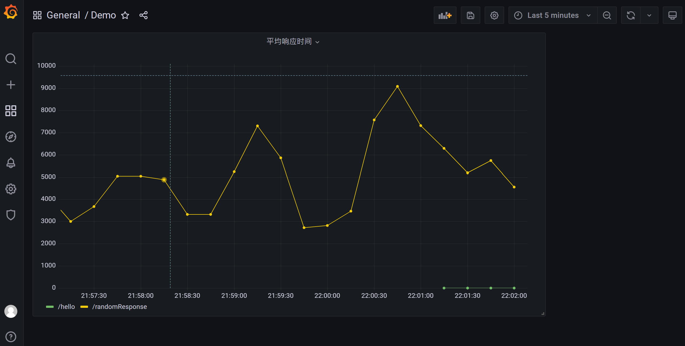
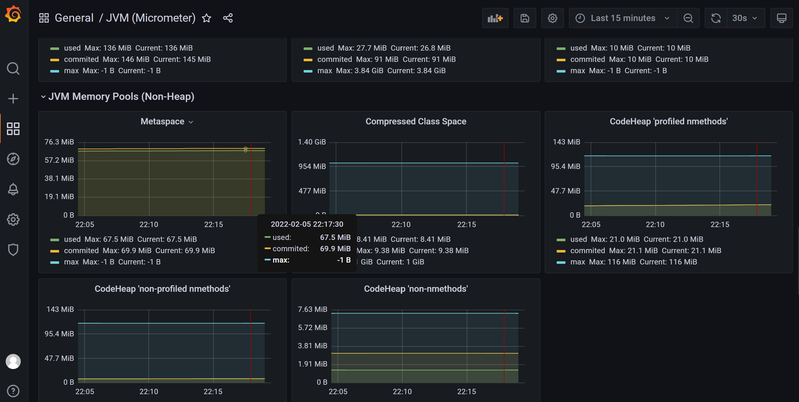
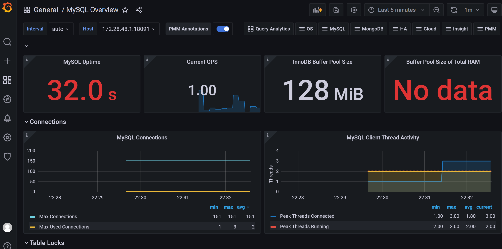

Grafana是一个跨平台的开源的度量分析和可视化工具，可以通过将采集的数据查询然后可视化的展示，并及时通知. 有以下特点:
wget https://dl.grafana.com/oss/release/grafana-8.3.4.linux-amd64.tar.gz./bin/grafana-server web, 启动成功;INFO[02-05|19:47:33] HTTP Server Listen logger=http.server address=[::]:3000 protocol=http subUrl= socket=, 说明访问端口是3000. 直接访问即可http://localhost:3000/
也可以修改访问端口, 在conf文件夹中, 将
defaults.ini复制一份, 并命名为custom.ini, 然后, 找到里面的http_port, 修改为指定的值就可以了.
这个, Prometheus官网提供了详细的说明https://prometheus.io/docs/visualization/grafana/, 这里再复述一下:
接下来创建一个图表, 这里Prometheus官网也提供的详细的步骤:


最终效果图如下:

如果所有的指标都这样一个一个配置, 工作量是会很大的, 幸运的是, Grafana官网提供了很多现有的例子, 可以在这里找到. 下面就尝试一个.
在Grafana提供的页面找到JVM(Micrometer), 这里采用json的方式导入, 还有通过id直接联网导入的方式, 但是有些环境中, 是没有办法访问到外网的.

这个仪表的内容非常丰富, IO, 线程, 堆内存, 非堆内存, 垃圾收集暂停等等:



再试一个mysql的, 看下效果, 下载Mysql Overview, 然后导入.
